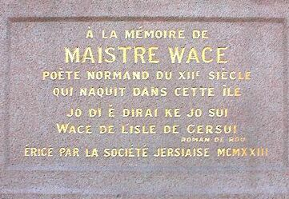

Lé Vièr Marchi
 Lé Vièr Marchi est au mitan d'la Ville dé Saint Hélyi et ch'est l'mitan d'l'Île étout. Véthe, toutes les distances en Jèrri sont m'suthées du bas d'la Pithamide, ch'est à dithe lé piédesta d'la statue rouoyale. Y'a un p'tit bouton en méta sus eune carre du piédesta tchi mèrque lé c'menchement dé toutes les distances.
Lé Vièr Marchi est au mitan d'la Ville dé Saint Hélyi et ch'est l'mitan d'l'Île étout. Véthe, toutes les distances en Jèrri sont m'suthées du bas d'la Pithamide, ch'est à dithe lé piédesta d'la statue rouoyale. Y'a un p'tit bouton en méta sus eune carre du piédesta tchi mèrque lé c'menchement dé toutes les distances.
Lé Vièr Marchi a 'té au tchoeu d'la Ville - et d'la vie des Jèrriais - d'pis les touos vièrs temps. Ch'tait eune pièche ouèrte entouothée d'tchiques maîsons et boutiques auve eune rue sus l'Vouêt - la Grande Rue - et eune rue sus l'Êst tchi m'nait par la Colomb'thie. Entre la pièche et les banques dé sablion au bord d'la mé, y'avait l'Églyise dé Saint Hélyi. L'Églyise est acouo là, quâsiment à eune carre d'la pièche, mais les mathées n'montent d'aut' ès muthâles du chînm'tchiéthe. La mé a 'té cârrée du Vièr Marchi par l'èrcliâmâtion et la bâtithie d'bâtisses et d'caûchies.
Les stâlles du marchi ont 'té cârrées étout. Lé Vièr Marchi, coumme dé raison, 'tait la pièche du marchi où'est qu'nou-s'acatait et vendait tout. Les nouvieaux marchièrs fûtent bâtis au dgiêx-neuvième siècl'ye et l'marchi r'muit hors d'la pièche.
Y'avait eune crouaix dans l'Vièr Marchi jusqu'à la R'formâtion quand toutes les crouaix mâtées partoute l'Île fûtent pitchies bas. Y'avait des plians pus tard pouor pliaichi tchique monument dans l'Vièr Marchi, mais ch'fut raîque en 1751 qu'eune statue fut dêvouailée dans la pièche tch'i d'vînt ainchîn rouoyale. La statue r'présente lé Rouai George II tchi baillit deux chents louis ès Êtats d'Jèrri pouor la bâtithie d'eune caûchie. Nou-s'a dêrenglyi pouor chein qu'i' tcheint à sa main? Ch'est-i' un bâton dé c'mande? Lé Rouai George II 'tait l'drein rouai Britannique tchi m'nit ses troupes en batâle pèrsonnellement - mais i' n'avait janmais m'né des troupes en Jèrri; i' n'avait pon même vîsité l'Île en tout. Ch'est-i' un rouôlot d'plians d'la caûchie qu'i' tcheint? Ch'est pôssibl'ye qu'il est r'présenté coumem lé patron des travaux, coumme lé Génétha Don pus tard dé tchi la statue tcheint les plians d'ses grands c'mîns militaithes. Ch'est-i' un rouôlot des Constitutions du Rouai Jean qu'i' présente à l'Île pouor confirmer les louis et couôteunmes du Bailliage? Y'en a tch'ont creu d'même. Mais ch'est seux et cèrtain qu'lé bouonhoumme du Vièr Marchi a veu un tas d'tchi avaû l's années.
I' 'tait là l'six d'Janvyi 1781 quand l'aventuthyi l'Baron d'Rullecourt tâchi d'contchéthi Jèrri pouor l'Rouai d'France. La Batâle dé Jèrri a laîssi des mémouaithes et monuments ichîn. L'Aubèrge Pierson dans la carre d'la pièche porte des mèrques dé boulets sus les muthâles - et ch'fut dans chutte carre-là qu'lé Mâjeur Pierson fut tué en entrant dans l'Vièr Marchi au c'menchment d'la batâle.

Y'a d'aut's monuments dans l'Vièr Marchi étout. Lé Monument Wace ramémouaithe not' preunmié poéte. La pièrre fut înstâllée par La Société Jersiaise en 1923.
Y'a eune aut' pièrre au ras du Monument Wace tchi ramémouaithe qu'la Libéthâtion fut annonchie du balcon du Bâtisse d's Êtats par l'Bailli Alexandre Coutanche dé tchi y'a eune stchulptuthe jutchie un mio pus haut sus la muthâle.
Y'a des portes dans la côtchiéthe du Bâtisse d's Êtats auve des armueûthies Rouoyales au d'ssus.
Les pavés du Vièr Marchi raconte d'l'histouaithe étout. Y'a lé grand V pouor Victouaithe à un but, tchi fut amendé en "Vega" d'auprès l'nom du navithe d'la Rouoge Crouaix tch'apportit des provisions en l'Île duthant l'drein Hivé d'l'Otchupâtion quand Jèrri 'tait copé d'la Grand' Tèrre. Y'a étout un pavé pouor ramémouaither la Batâle dé Jèrri. Et y'a un grand neunmétho 60 pouor ramémouaithe l'Jubilé d'Dgiamant d'la Reine, not' Duc, en 2012.
Les bouais tchi sont achteu si aimés fûtent pliantés pouor la preunmié fais au mais d'Févri 1894: deux rangies d'chât'nièrs à j'va au pouorportant des deux rues tchi soulaient crouaîsi la pièche d'un bord et d'l'aut', la Rue des Vîngnes et la Rue d'la Cour Rouoyale. Nou-s'avait plianné la pliant'tie d'eune vîngtaine dé bouais; aujourd'aniet y'a onze grands chât'nièrs à j'va dans l'Vièr Marchi tch'abrient les vîsiteurs et Villais en Êté et tchi sont êcliaithis pouor Noué atout des veues.
Lé cadran sus la muthâle d'la Maîson d'Pitchet est bein bé, bein seux, mais s'nou veurt saver l'heuthe, nou-s'est mus avisé d'èrgarder l'hôlouoge d'l'Églyise d'la Ville.
Viyiz étout: